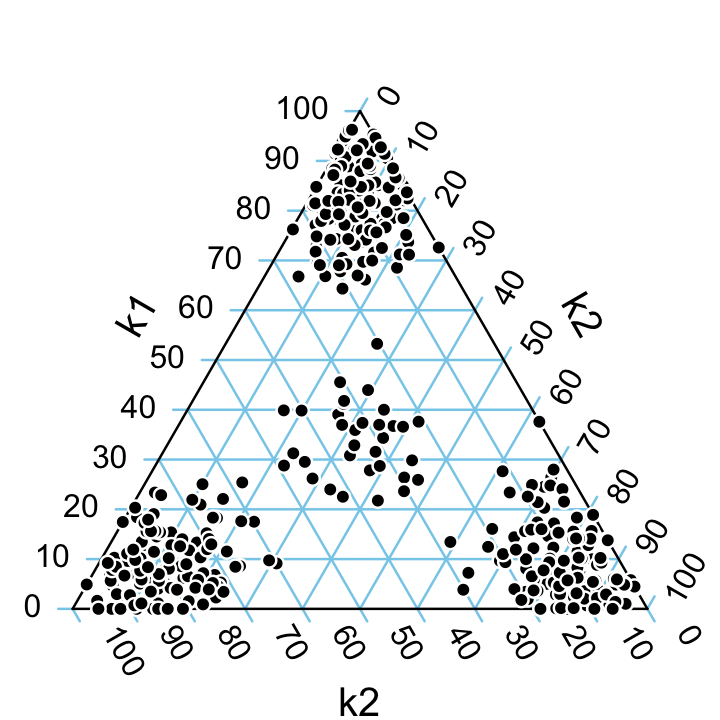
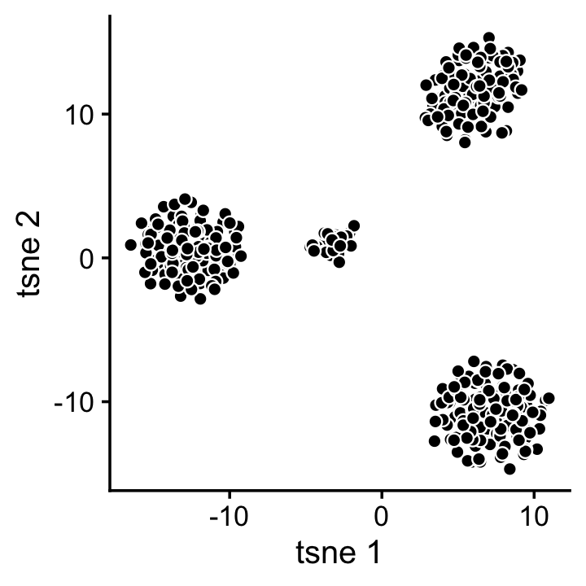
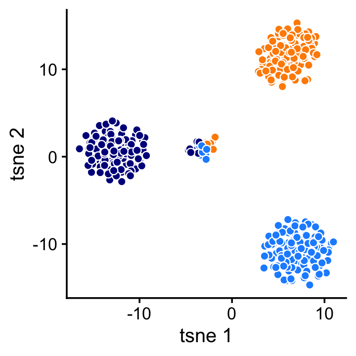
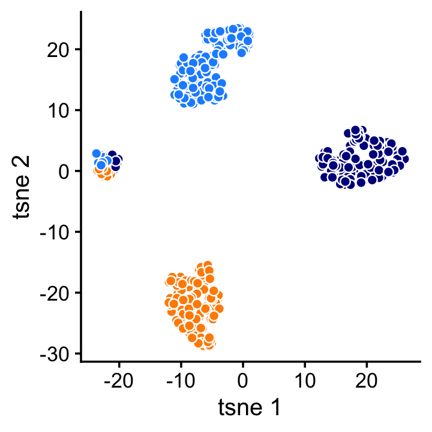

Topic modeling vs. clustering of gene expression data: an illustration
Peter Carbonetto
Last updated: 2020-08-15
Checks: 7 0
Knit directory: single-cell-topics/analysis/
This reproducible R Markdown analysis was created with workflowr (version 1.6.2.9000). The Checks tab describes the reproducibility checks that were applied when the results were created. The Past versions tab lists the development history.
Great! Since the R Markdown file has been committed to the Git repository, you know the exact version of the code that produced these results.
Great job! The global environment was empty. Objects defined in the global environment can affect the analysis in your R Markdown file in unknown ways. For reproduciblity it’s best to always run the code in an empty environment.
The command set.seed(1) was run prior to running the code in the R Markdown file. Setting a seed ensures that any results that rely on randomness, e.g. subsampling or permutations, are reproducible.
Great job! Recording the operating system, R version, and package versions is critical for reproducibility.
Nice! There were no cached chunks for this analysis, so you can be confident that you successfully produced the results during this run.
Great job! Using relative paths to the files within your workflowr project makes it easier to run your code on other machines.
Great! You are using Git for version control. Tracking code development and connecting the code version to the results is critical for reproducibility.
The results in this page were generated with repository version 0410543. See the Past versions tab to see a history of the changes made to the R Markdown and HTML files.
Note that you need to be careful to ensure that all relevant files for the analysis have been committed to Git prior to generating the results (you can use wflow_publish or wflow_git_commit). workflowr only checks the R Markdown file, but you know if there are other scripts or data files that it depends on. Below is the status of the Git repository when the results were generated:
Ignored files:
Ignored: data/droplet.RData
Ignored: data/pbmc_68k.RData
Ignored: data/pulseseq.RData
Ignored: output/droplet/fits-droplet.RData
Ignored: output/droplet/rds/
Ignored: output/pbmc-68k/fits-pbmc-68k.RData
Ignored: output/pbmc-68k/rds/
Ignored: output/pbmc-purified/fits-pbmc-purified.RData
Ignored: output/pulseseq/fits-pulseseq.RData
Ignored: output/pulseseq/rds/
Note that any generated files, e.g. HTML, png, CSS, etc., are not included in this status report because it is ok for generated content to have uncommitted changes.
These are the previous versions of the repository in which changes were made to the R Markdown (analysis/topics_vs_clusters.Rmd) and HTML (docs/topics_vs_clusters.html) files. If you’ve configured a remote Git repository (see ?wflow_git_remote), click on the hyperlinks in the table below to view the files as they were in that past version.
| File | Version | Author | Date | Message |
|---|---|---|---|---|
| Rmd | 0410543 | Peter Carbonetto | 2020-08-15 | wflow_publish(“topics_vs_clusters.Rmd”) |
| html | 7abadbf | Peter Carbonetto | 2020-08-15 | Fixed typo in topics_vs_clusters. |
| Rmd | f5a988f | Peter Carbonetto | 2020-08-15 | wflow_publish(“topics_vs_clusters.Rmd”) |
| html | 9588789 | Peter Carbonetto | 2020-08-15 | Revisions to the text of the topics_vs_clusters vignette. |
| Rmd | b9a4eba | Peter Carbonetto | 2020-08-15 | wflow_publish(“topics_vs_clusters.Rmd”) |
| html | 184b6da | Peter Carbonetto | 2020-08-15 | Build site. |
| Rmd | 3fda980 | Peter Carbonetto | 2020-08-15 | wflow_publish(“topics_vs_clusters.Rmd”) |
| html | b1bebb4 | Peter Carbonetto | 2020-08-15 | Added yet more explanatory text to topics_vs_clusters vignette. |
| Rmd | 1d69d0d | Peter Carbonetto | 2020-08-15 | wflow_publish(“topics_vs_clusters.Rmd”) |
| html | 6741702 | Peter Carbonetto | 2020-08-15 | Added more explanatory text to topics_vs_clusters vignette. |
| Rmd | bc8b4ac | Peter Carbonetto | 2020-08-15 | wflow_publish(“topics_vs_clusters.Rmd”) |
| html | 20f0fb3 | Peter Carbonetto | 2020-08-15 | Added explanatory text to topics_vs_clusters vignette. |
| Rmd | 4accb51 | Peter Carbonetto | 2020-08-15 | wflow_publish(“topics_vs_clusters.Rmd”) |
| Rmd | 4e54188 | Peter Carbonetto | 2020-08-15 | Added introductory text to topics_vs_clusters.Rmd. |
| html | 97331e9 | Peter Carbonetto | 2020-08-13 | Amended plots in topics_vs_clusters analysis. |
| Rmd | 77a0c2a | Peter Carbonetto | 2020-08-13 | Implemented plot_tsnee and plot_pca functions in functions_for_topics_vs_clusters.R. |
| html | 77a0c2a | Peter Carbonetto | 2020-08-13 | Implemented plot_tsnee and plot_pca functions in functions_for_topics_vs_clusters.R. |
| html | e17f585 | Peter Carbonetto | 2020-08-13 | Re-built the topics_vs_clusters analysis with the new t-SNE and PCA |
| Rmd | ffbfdc8 | Peter Carbonetto | 2020-08-13 | wflow_publish(“topics_vs_clusters.Rmd”) |
| Rmd | 85b22a1 | Peter Carbonetto | 2020-08-13 | Implemented function plot_tsne for topics_vs_clusters. |
| html | 85b22a1 | Peter Carbonetto | 2020-08-13 | Implemented function plot_tsne for topics_vs_clusters. |
| Rmd | c6f10e3 | Peter Carbonetto | 2020-08-13 | Added tsne plot to topics_vs_clusters vignette. |
| Rmd | a3115f2 | Peter Carbonetto | 2020-08-13 | Working on topics_vs_clusters vignette. |
| html | 303c6e4 | Peter Carbonetto | 2020-08-13 | Build site. |
| Rmd | 41b9d8a | Peter Carbonetto | 2020-08-13 | wflow_publish(“topics_vs_clusters.Rmd”) |
| html | f255c6f | Peter Carbonetto | 2020-08-13 | Fixed R Markdown syntax issue in topics_vs_clusters.Rmd. |
| Rmd | 00eec70 | Peter Carbonetto | 2020-08-13 | wflow_publish(“topics_vs_clusters.Rmd”) |
| html | 9c37c09 | Peter Carbonetto | 2020-08-13 | First build of topics_vs_clusters analysis. |
| Rmd | f904dbb | Peter Carbonetto | 2020-08-13 | wflow_publish(“topics_vs_clusters.Rmd”) |
| Rmd | 9e11671 | Peter Carbonetto | 2020-08-13 | Added Poisson NMF model fitting to topics_vs_clusters.R. |
| Rmd | 4ff4d88 | Peter Carbonetto | 2020-08-12 | Created topics_vs_clusters.Rmd. |
Clustering methods are widely used to discover interesting substructure in bulk or single-cell RNA sequencing (“RNA-seq”) data. An alternative is to use a topic model, which explains each sample (an expression profile) as a mixture of “gene programs” that are estimated from the data. In a topic modeling analysis, the gene expression programs are the topics.
In this short vignette, we show that a topic model picks up a very different kind of substructure that cannot be identified by (hard) clustering methods.
library(ggplot2)
library(cowplot)
library(Ternary)
library(Rtsne)
library(fastTopics)
source("../code/functions_for_topics_vs_clusters.R")Simulate a “toy” gene expression data set from the multinomial topic model. Each sample—here, a vector of 400 counts—is generated as a mixture of three gene programs (the topics in the topic model). In particular, samples are mostly generated by either a single gene program or an approximately equal mixture of the three gene programs.
set.seed(1)
X <- simulate_toy_gene_data(n = 400,m = 40,k = 3,s = 1000)$XTopic modeling analysis
To illustrate a topic modeling analysis, we fit a multinomial topic model to these data,
fit <- fit_poisson_nmf(X,k = 3,numiter = 100,verbose = FALSE,
control = list(extrapolate = TRUE))
fit <- poisson2multinom(fit)then we plot the estimated topic proportions.
par(mar = c(0,0,0,0))
create_ternary_plot(fit$L)
We observe in this plot that the estimated topic model recaptures the simulation: according to the model, samples are primarily explained by a single gene program, or by an approximately equal mixture of three gene programs.
Clustering analysis
To illustrate a clustering analysis, we use the t-SNE algorithm to project the samples onto a 2-d embedding.
tsne1 <- Rtsne(X,2,pca = FALSE,normalize = FALSE)
plot_tsne(tsne1)
| Version | Author | Date |
|---|---|---|
| 97331e9 | Peter Carbonetto | 2020-08-13 |
This 2-d projection immediately suggests four clusters. (In practice, one could automate the clustering of these data using a community detection method such as the Louvain algorithm, or by applying \(k\)-means to the \(t\)-SNE projection.)
Although the clustering is correct—there are indeed four clusters—it fails to reveal any insight into the relationship between these clusters. In particular, the distribution of genes in the middle cluster is an equal mixture of the gene distributions in the other clusters. This is a limitation of any clustering method that does not allow for partial membership to clusters.
To further understand this point, we label each sample by the topic with the highest estimated weight:
plot_tsne_with_topics(tsne1,fit$L)
| Version | Author | Date |
|---|---|---|
| 97331e9 | Peter Carbonetto | 2020-08-13 |
In general, a clustering will align closely with the topic modeling whenever the samples can be largely explained by a single topic or gene program. Outside this setting, topic modeling and clustering can reveal very different sorts of substructure, so a topic modeling analysis should not be expected to recapture the results of a clustering analysis, and vice versa.
Inferring clusters from the topic model
Despite this limitation of the clustering methods, it can nonetheless be useful to identify the clusters exhibiting markedly different gene expression patterns. This can also be done within a topic modeling analysis: the topic model contains enough information to identify these clusters, at least in the artificial setting where the data are simulated from a topic model.
For example, a 2-d t-SNE projection of the topic proportions reveals the same four clusters:
tsne2 <- Rtsne(fit$L,2,pca = FALSE,normalize = FALSE)
plot_tsne_with_topics(tsne2,fit$L)
| Version | Author | Date |
|---|---|---|
| 97331e9 | Peter Carbonetto | 2020-08-13 |
Or we can achieve a similar result using PCA:
pca <- prcomp(fit$L,center = TRUE,scale = FALSE)
plot_pca(pca,fit$L)
| Version | Author | Date |
|---|---|---|
| 97331e9 | Peter Carbonetto | 2020-08-13 |
In short, the topic modeling analysis retains the benefits of the clustering analysis, while revealing additional substructure that cannot be identified by standard clustering methods.
sessionInfo()
# R version 3.6.2 (2019-12-12)
# Platform: x86_64-apple-darwin15.6.0 (64-bit)
# Running under: macOS Catalina 10.15.5
#
# Matrix products: default
# BLAS: /Library/Frameworks/R.framework/Versions/3.6/Resources/lib/libRblas.0.dylib
# LAPACK: /Library/Frameworks/R.framework/Versions/3.6/Resources/lib/libRlapack.dylib
#
# locale:
# [1] en_US.UTF-8/en_US.UTF-8/en_US.UTF-8/C/en_US.UTF-8/en_US.UTF-8
#
# attached base packages:
# [1] stats graphics grDevices utils datasets methods base
#
# other attached packages:
# [1] fastTopics_0.3-145 Rtsne_0.15 Ternary_1.1.4 cowplot_1.0.0
# [5] ggplot2_3.3.0
#
# loaded via a namespace (and not attached):
# [1] ggrepel_0.9.0 Rcpp_1.0.3 lattice_0.20-38
# [4] tidyr_1.0.0 prettyunits_1.1.1 assertthat_0.2.1
# [7] zeallot_0.1.0 rprojroot_1.3-2 digest_0.6.23
# [10] R6_2.4.1 backports_1.1.5 MatrixModels_0.4-1
# [13] evaluate_0.14 coda_0.19-3 httr_1.4.1
# [16] pillar_1.4.3 rlang_0.4.5 progress_1.2.2
# [19] lazyeval_0.2.2 data.table_1.12.8 irlba_2.3.3
# [22] SparseM_1.78 whisker_0.4 Matrix_1.2-18
# [25] rmarkdown_2.3 labeling_0.3 stringr_1.4.0
# [28] htmlwidgets_1.5.1 munsell_0.5.0 compiler_3.6.2
# [31] httpuv_1.5.2 xfun_0.11 pkgconfig_2.0.3
# [34] mcmc_0.9-6 htmltools_0.4.0 tidyselect_0.2.5
# [37] tibble_2.1.3 workflowr_1.6.2.9000 quadprog_1.5-8
# [40] viridisLite_0.3.0 crayon_1.3.4 dplyr_0.8.3
# [43] withr_2.1.2 later_1.0.0 MASS_7.3-51.4
# [46] grid_3.6.2 jsonlite_1.6 gtable_0.3.0
# [49] lifecycle_0.1.0 git2r_0.26.1 magrittr_1.5
# [52] scales_1.1.0 RcppParallel_4.4.4 stringi_1.4.3
# [55] farver_2.0.1 fs_1.3.1 promises_1.1.0
# [58] vctrs_0.2.1 tools_3.6.2 glue_1.3.1
# [61] purrr_0.3.3 hms_0.5.2 yaml_2.2.0
# [64] colorspace_1.4-1 plotly_4.9.2 knitr_1.26
# [67] quantreg_5.54 MCMCpack_1.4-5